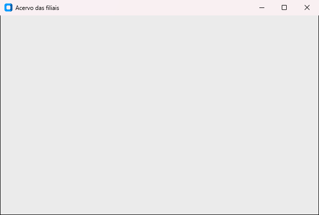
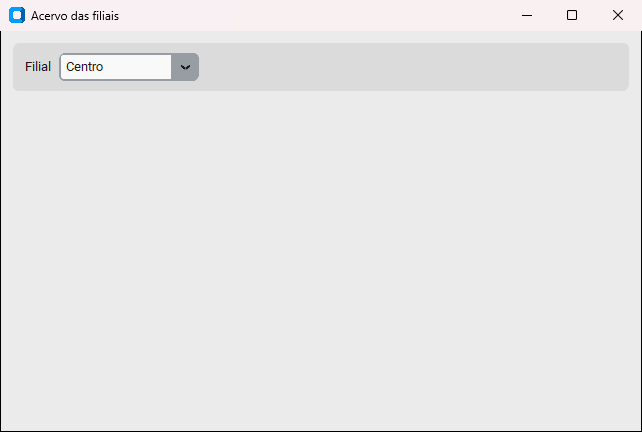
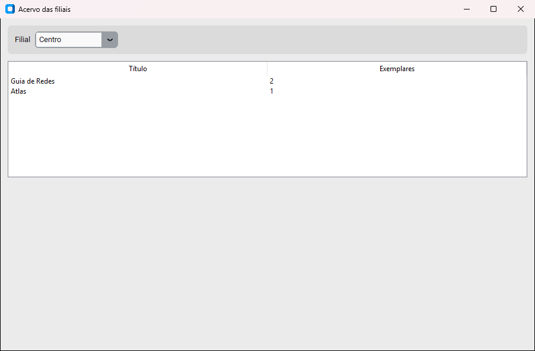
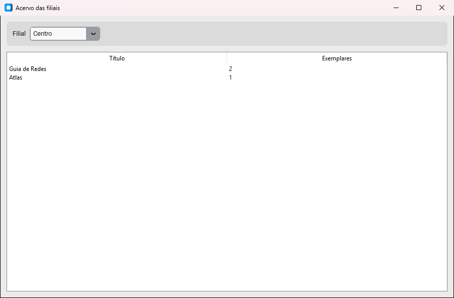
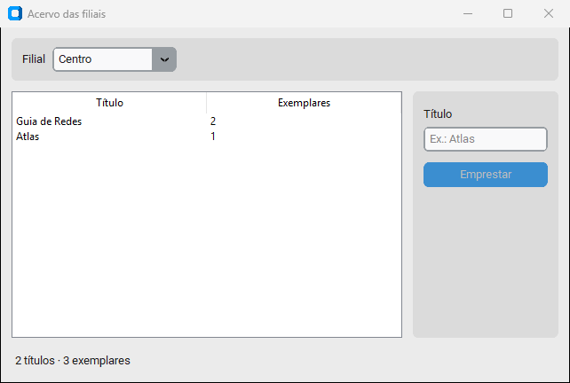
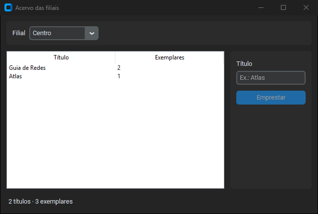
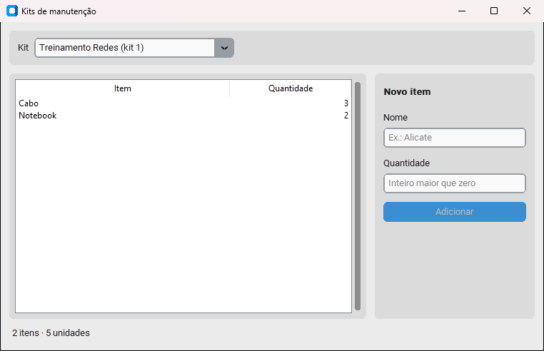

Técnico em Desenvolvimento de Sistemas · Plano de Curso 01/2025
Ponha os kits numa janela: grade, widgets e camadas
Até aqui, o kits só falava pelo terminal. Hoje ele ganha uma janela desktop com CustomTkinter: um seletor de kit, a lista de itens lida do MySQL e um formulário que a A12 vai ligar. Você organiza a janela em grade, escolhe os widgets, separa a interface do banco para testá-la sem MySQL e depura uma janela herdada que travava, encolhia, repetia itens e mostrava dados velhos.
A aula continua no MySQL da A08 e no mesmo repositório da A10. Cliques, validação do formulário e mensagens de erro na tela são a A12; gravar pela janela é a A13. A janela usa CustomTkinter 6.0.0, instalado pelo requirements.txt. Use dados fictícios.
O suporte recebeu uma janela herdada, janela_legado.py, para consultar os itens dos kits sem abrir o terminal. Ela chegou com um relato: abre e fecha na hora, com um erro TclError. Um colega trocou uma linha e a janela abriu, mas vieram mais três relatos.
Maximizada, a lista fica pequena no canto. Trocar de kit e voltar mostra os itens repetidos. E um item cadastrado pelo terminal não aparece nem trocando de kit; só fechando e abrindo a janela.
Em dupla, antes de abrir o código, escrevam um palpite para cada relato. Algum deles pode ser culpa do banco, e não da janela?
Entrega desta aula
No repositório do projeto: requirements.txt com o customtkinter; listar_kits e listar_itens em kits/repositorio.py; kits/janela.py com a JanelaItens; abrir_janela.py, na raiz; tests/test_janela.py e tests/test_fontes.py; e a seção Janela de itens no README.md. Faça um commit revisado e envie pelo canal combinado com a turma junto com o registro exportado desta página. Critério: os testes passam e abrir_janela.py mostra os itens do banco kits.
Um script de terminal roda de cima para baixo e termina. Um programa de janela monta os widgets e entra no mainloop: um laço que espera o usuário clicar, digitar ou redimensionar, redesenha o que mudou e volta a esperar. Ele só termina quando a janela fecha. Por isso janela.mainloop() é sempre a última linha, e o código depois dele só roda quando a janela fecha.
O Python traz o tkinter, a biblioteca de janelas mais antiga dele. O CustomTkinter é um pacote construído sobre o tkinter, com widgets de aparência atual, cantos arredondados e modo claro ou escuro. Todo widget dele começa com CTk: CTk é a janela, CTkLabel é um texto, CTkEntry é um campo. Como é um pacote externo, ele entra no requirements.txt com a versão fixa, como o conector do MySQL na A08.
Cada widget é criado dentro de um contêiner, o mestre, passado como primeiro argumento: ctk.CTkLabel(topo, text='Kit') cria um rótulo dentro do quadro topo. Criar não mostra nada. O widget só aparece quando um gerenciador de geometria o posiciona dentro do mestre.
Instale com a versão fixa
No .venv do projeto: .\.venv\Scripts\python.exe -m pip install customtkinter==6.0.0 e depois .\.venv\Scripts\python.exe -m pip freeze > requirements.txt. Sem a versão fixa, outra máquina pode instalar uma versão com outro comportamento, e os testes passam numa e falham na outra.
O grid divide o contêiner em linhas e colunas numeradas a partir de 0, e cada widget ocupa uma célula: lista.grid(row=1, column=0). Uma célula só é do tamanho do que está nela. Para um widget ocupar mais de uma célula, columnspan ou rowspan.
Duas opções decidem o que acontece quando a janela cresce. O weight vale para a linha ou a coluna: grid_rowconfigure(1, weight=1) diz que a linha 1 recebe o espaço que sobrar; sem weight, a linha fica do tamanho do conteúdo e o espaço extra vira margem vazia. O sticky vale para o widget: sticky='nsew' estica o widget até as quatro bordas da célula; sem ele, o widget fica centralizado, do tamanho natural. Para a lista crescer, são precisos os dois.
Um quadro, o CTkFrame, é um contêiner dentro do contêiner, com a própria grade. A janela dos kits tem três quadros: o topo, a lista e o formulário. Cada um organiza o que está dentro dele, e a janela só organiza os três.
Opções do grid que esta aula usa
Opção
Onde
O que faz
row, column
widget.grid(...)
A célula: linha e coluna, a partir de 0.
columnspan, rowspan
widget.grid(...)
Quantas colunas ou linhas o widget ocupa.
sticky
widget.grid(...)
A que bordas da célula o widget gruda: n, s, e, w ou combinações, como 'ew' e 'nsew'.
padx, pady
widget.grid(...)
Margem em volta do widget; um par, como (12, 6), dá valores diferentes para cada lado.
weight
contêiner.grid_rowconfigure(n, ...) e grid_columnconfigure(n, ...)
Quanto do espaço que sobra a linha ou a coluna recebe; 0, o padrão, não recebe nada.
Dois gerenciadores no mesmo contêiner
pack e grid disputam a mesma janela, e o Tk recusa com TclError na hora em que o segundo é chamado.
topo.pack(fill='x')
lista.grid(row=1, column=0)
Um gerenciador por contêiner
Na janela, só grid. Dentro de um quadro pode ser outro, porque o quadro é outro contêiner.
Cada widget responde a uma pergunta: o que o usuário precisa fazer ali? Escolher um kit entre os que existem pede uma lista fechada, e não um campo livre onde dá para digitar um kit que não existe. Ver vários itens com duas informações cada pede uma tabela. Digitar um nome pede um campo.
O CustomTkinter não tem tabela. Para listar, a aula usa o ttk.Treeview, do tkinter.ttk, que vem com o Python. Ele funciona dentro de uma janela CTk, mas não acompanha o modo escuro do CustomTkinter: o passo 7 do tutorial mostra isso, e o bônus resolve.
Cada linha do Treeview tem um identificador, o iid. Usar o id do item do banco como iid deixa a linha apontando para o item: na A12, ao clicar numa linha, a janela vai saber qual item foi escolhido sem procurar pelo nome.
Widgets da janela dos kits
Widget
Para quê
Detalhe que importa
CTkFrame
Agrupar widgets num quadro com a própria grade
Cada quadro escolhe o próprio gerenciador de geometria.
CTkLabel
Texto fixo: rótulos e o status
configure(text=...) troca o texto depois de criado.
CTkComboBox
Escolher um kit
state='readonly' impede digitar um kit que não existe; command chama uma função quando a escolha muda.
ttk.Treeview
Listar itens em colunas
show='headings' esconde a coluna da árvore; delete(*get_children()) limpa a lista.
CTkScrollbar
Rolar a lista
Liga nos dois sentidos: command=lista.yview e yscrollcommand=rolagem.set.
CTkEntry
Digitar nome e quantidade
placeholder_text mostra um exemplo enquanto o campo está vazio.
CTkButton
Agir
state='disabled' deixa o botão visível e sem ação, até a A12.
Se a janela abrir conexões e escrever SQL, ela só pode ser testada com o MySQL ligado, e cada defeito de layout vira um problema de banco. A JanelaItens recebe duas funções: listar_kits(), que devolve [(id, nome)], e listar_itens(kit_id), que devolve [(id, nome, quantidade)]. Ela chama as funções quando precisa e não pergunta de onde vêm os dados.
Nos testes da janela, as funções devolvem listas fixas, e os testes rodam sem banco, em um segundo. No aplicativo, abrir_janela.py entrega funções que consultam o MySQL pelo repositório. Na A13, quem gravar pela janela vai receber outras funções, e a janela continua não sabendo SQL.
Quanto às conexões, a A10 já mostrou o risco: uma conexão aberta no começo e nunca encerrada fica numa transação só, e o REPEATABLE READ devolve sempre a foto da primeira leitura. Numa janela que fica aberta o dia inteiro, é o item que nunca aparece. Cada consulta da janela usa um conexao_banco: abre, consulta, faz commit e fecha. A consulta seguinte começa outra transação e vê os dados de agora.
Uma conexão para a vida inteira da janela
O primeiro SELECT abre uma transação que nunca termina, e a janela lê a mesma foto até fechar.
con = mysql.connector.connect(**config['mysql'])
cur = con.cursor()
def mostrar(escolha):
cur.execute('SELECT ... WHERE kit_id = %s', (kits[escolha],))
Uma conexão por consulta
O conexao_banco faz commit e fecha; a próxima consulta enxerga o que outros gravaram.
def itens(kit_id):
with conexao_banco(config) as con:
return listar_itens(con, kit_id)
O tutorial monta uma janela de livros por filial, com dados fixos no próprio código: o assunto é a janela, e o banco fica para a prática. Crie tutorial_janela.py na raiz do projeto. Cada passo acrescenta um trecho ao fim do arquivo, e a última linha é sempre janela.mainloop(). Rode com .\.venv\Scripts\python.exe tutorial_janela.py, olhe a janela, feche e siga para o próximo passo.
As imagens são capturas reais das janelas geradas por esse código no Windows 11, com CustomTkinter 6.0.0. A sua pode ter outra cor na barra de título, que vem do Windows.
Passo 1 · Uma janela vazia
import customtkinter as ctk
from tkinter import ttk
ctk.set_appearance_mode('light')
janela = ctk.CTk()
janela.title('Acervo das filiais')
janela.geometry('640x400')
Passo 1 · A janela
Uma janela CTk com título e tamanho, no modo claro. Ela fica aberta até você fechar: é o mainloop esperando.

Repare: Sem o set_appearance_mode, o CustomTkinter usa o modo system, que segue o Windows: num Windows escuro, a janela abriria escura. O passo 7 mostra por que, por enquanto, fixamos o claro.
O quadro topo ocupa a linha 0 e gruda nas bordas esquerda e direita (sticky='ew'). Dentro dele, outra grade: o rótulo na coluna 0 e o seletor na coluna 1.

Repare: O quadro estica até a borda direita porque a coluna 0 da janela tem weight=1.
Passo 3 · A lista, sem weight na linha
lista = ttk.Treeview(janela, columns=('titulo', 'exemplares'), show='headings')
lista.heading('titulo', text='Título')
lista.heading('exemplares', text='Exemplares')
lista.grid(row=1, column=0, sticky='nsew', padx=12, pady=(0, 12))
for titulo, exemplares in FILIAIS['Centro']:
lista.insert('', 'end', values=(titulo, exemplares))
Passo 3 · A lista e a janela ampliada
Rode e amplie a janela, puxando o canto ou maximizando. A imagem foi feita com a janela em 900 por 560.

Repare: A lista cresceu para os lados, mas não para baixo: a coluna 0 tem weight, a linha 1 não. O espaço que sobra vira margem vazia.
Passo 4 · Weight na linha da lista
janela.grid_rowconfigure(1, weight=1)
Passo 4 · Agora a lista acompanha
Uma linha só, e a lista ocupa a janela ampliada inteira.

Repare: Precisou dos dois: sticky='nsew' na lista, que já estava lá, e weight=1 na linha 1.
O quadro lado ocupa a coluna 1, que não tem weight: fica do tamanho do conteúdo, e a lista fica com o resto. O topo passa a ocupar as duas colunas e o rodapé vai para a linha 2.

Repare: O botão Emprestar aparece desbotado: state='disabled'. Ele ganha ação na A12.
Passo 6 · Um pack no meio da grade
ctk.CTkLabel(janela, text='Aviso').pack()
Passo 6 · O erro do relato 1
Rode com o trecho do passo 6 no fim do arquivo. A janela nem chega a aparecer.
PS C:\projetos\kits> .\.venv\Scripts\python.exe tutorial_janela.py
Traceback (most recent call last):
File "C:\projetos\kits\tutorial_janela.py", line 37, in <module>
ctk.CTkLabel(janela, text='Aviso').pack()
~~~~~~~~~~~~~~~~~~~~~~~~~~~~~~~~~~~~~~~^^
File "C:\projetos\kits\.venv\Lib\site-packages\customtkinter\windows\widgets\core_widget_classes\ctk_base_class.py", line 298, in pack
return super().pack(**self._apply_argument_scaling(kwargs))
~~~~~~~~~~~~^^^^^^^^^^^^^^^^^^^^^^^^^^^^^^^^^^^^^^^^
File "C:\Python314\Lib\tkinter\__init__.py", line 2642, in pack_configure
self.tk.call(
~~~~~~~~~~~~^
('pack', 'configure', self._w)
^^^^^^^^^^^^^^^^^^^^^^^^^^^^^^
+ self._options(cnf, kw))
^^^^^^^^^^^^^^^^^^^^^^^^^
_tkinter.TclError: cannot use geometry manager "pack" inside ".": grid is already managing its content windows
Repare: A última linha diz o que houve: a janela (o ".") já é organizada pelo grid, e o pack foi recusado. Apague a linha do passo 6 antes de seguir.
Passo 7 · O modo escuro
ctk.set_appearance_mode('dark')
Passo 7 · O modo escuro e a lista branca
Acrescente o trecho do passo 7, sem o do passo 6.

Repare: Tudo o que é CTk escureceu; a lista, que é ttk, continuou branca. Por isso a JanelaItens fixa o modo claro, e o bônus da prática pinta a lista com as cores do modo.
Mensagens desta aula
Mensagem
O que significa
O que fazer
_tkinter.TclError: cannot use geometry manager "pack" inside ".": grid is already managing its content windows
Dois gerenciadores de geometria no mesmo contêiner.
Use um só por contêiner; para misturar, ponha um quadro no meio.
ModuleNotFoundError: No module named 'customtkinter'
O pacote não está no ambiente que rodou o script.
Rode com .\.venv\Scripts\python.exe e instale pelo requirements.txt.
invalid command name "..._windows_set_titlebar_icon" nos testes
O CustomTkinter tinha uma tarefa agendada quando a janela foi destruída.
Nos testes, feche com a função fechar do test_janela.py, que cancela as tarefas antes.
DatabaseError: 1205 (HY000): Lock wait timeout exceeded no setUp de tests/test_fontes.py
Uma conexão que nunca fecha ficou com a transação aberta e segura as tabelas; o DROP TABLE do esquema desistiu depois de 5 segundos.
Procure a conexão guardada, como a do relato 4, e use um conexao_banco por consulta. O primeiro teste que falhou costuma mostrar a causa.
A janela abre e não responde, sem erro
Um laço longo ou uma espera rodando antes ou dentro do mainloop.
Nada de laços demorados no código da janela; consultas curtas, como as do repositório.
Continue no repositório do projeto, na raiz, com o .venv e o banco.ini da A08. Uma pessoa opera e a outra confere; troquem os papéis depois do intervalo.
A ordem importa: dependência, repositório, janela com os testes sem banco, ligação com o banco e só então a janela herdada. Se consultar IA, registre a ajuda recebida e confirme cada sugestão rodando os testes.
Como a janela dos kits fica
Capturada com abrir_janela.py lendo o banco kits com os dados fictícios das aulas anteriores.

requirements.txt: o CustomTkinter com a versão fixa
Instale o CustomTkinter 6.0.0 no .venv do projeto e regenere o requirements.txt com pip freeze. Confira que o arquivo traz customtkinter, as dependências dele (darkdetect e packaging) e o mysql-connector-python da A08, todos com ==. Entrega: requirements.txt.
Concluído quando: Numa pasta nova, .\.venv\Scripts\python.exe -m pip install -r requirements.txt instala tudo, e .\.venv\Scripts\python.exe -c "import customtkinter; print(customtkinter.__version__)" mostra 6.0.0.
Dica para realizar a atividade
Por que o requirements.txt guarda também darkdetect e packaging, se você só pediu o customtkinter?
mysql-connector-python==26.10.0
Na raiz do projeto, no PowerShell: .\.venv\Scripts\python.exe -m pip install customtkinter==6.0.0 e .\.venv\Scripts\python.exe -m pip freeze > requirements.txt.
kits/repositorio.py: listar_kits e listar_itens
Acrescente ao repositório listar_kits(con), que devolve [(id, nome)] de todos os kits em ordem alfabética, e listar_itens(con, kit_id), que devolve [(id, nome, quantidade)] dos itens daquele kit na ordem em que foram cadastrados. Valores sempre por parâmetro. Entrega: kits/repositorio.py.
Concluído quando: Os dois primeiros testes de tests/test_fontes.py passam, e os testes das aulas anteriores continuam passando.
Dica para realizar a atividade
Volte à busca da A08: o kit_id entra no SQL do mesmo jeito que entrava lá?
# Acrescente ao fim do seu kits/repositorio.py.
def listar_kits(con):
"""Kits para escolher na janela: [(id, nome)], em ordem alfabética."""
...
def listar_itens(con, kit_id):
"""Itens de um kit: [(id, nome, quantidade)], na ordem em que foram cadastrados."""
...
Na raiz do projeto. Testes: .\.venv\Scripts\python.exe -m unittest -v, na raiz do projeto, com o MySQL ligado e o banco.ini da A08. Os testes recriam as tabelas no kits_teste; o kits fica intacto.
kits/janela.py: a JanelaItens
Complete a JanelaItens seguindo os comentários do arquivo: grade com topo, lista e formulário, e status no rodapé; seletor de kit só de escolha, que troca a lista; lista com as colunas Item e Quantidade, o id do item como iid e barra de rolagem; formulário com Nome, Quantidade e o botão Adicionar desligado. Só a lista cresce com a janela. A janela não importa nada do banco. Entrega: kits/janela.py.
Concluído quando: Os sete testes de tests/test_janela.py passam, inclusive os três que você vai completar na próxima atividade, e a janela fica como a imagem acima.
Dica para realizar a atividade
Volte aos passos 3 e 4 do tutorial. Qual linha e qual coluna da janela precisam de weight, e qual quadro precisa de sticky='nsew'?
"""Janela de itens do kit (A11). Não sabe SQL: recebe as funções que buscam os dados."""
from tkinter import ttk
import customtkinter as ctk
TITULO = 'Kits de manutenção'
class JanelaItens(ctk.CTk):
"""listar_kits() devolve [(id, nome)]; listar_itens(kit_id) devolve [(id, nome, quantidade)]."""
def __init__(self, listar_kits, listar_itens):
# O padrão é 'system', que segue o Windows; a lista (ttk) não acompanha o modo escuro.
ctk.set_appearance_mode('light')
super().__init__()
self._listar_itens = listar_itens
self._kits = {f'{nome} (kit {kit_id})': kit_id for kit_id, nome in listar_kits()}
self.title(TITULO)
self.geometry('760x460')
# 1. Organize a janela em grade: linha 0 (topo, nas duas colunas), linha 1 (lista à esquerda,
# formulário à direita), linha 2 (status, nas duas colunas). Só a lista cresce com a janela.
# 2. Topo: rótulo Kit e self.kit, um CTkComboBox só de escolha com os rótulos de self._kits,
# que chama self.mostrar quando a escolha muda.
# 3. Lista: self.lista, um ttk.Treeview com as colunas Item e Quantidade e uma barra de rolagem.
# 4. Formulário: Nome (self.nome), Quantidade (self.quantidade) e o botão self.adicionar,
# desligado até a A12.
# 5. Status: self.status, um CTkLabel. Sem kits, ele diz Nenhum kit cadastrado. e a lista fica vazia;
# com kits, a janela abre no primeiro e mostra os itens dele.
...
def kit_atual(self):
return self._kits.get(self.kit.get())
def mostrar(self, _escolha=None):
"""Troca o conteúdo da lista pelos itens do kit escolhido e atualiza o status."""
# Cada linha da lista usa o id do item como iid. Status: '2 itens · 5 unidades' ou '1 item · 5 unidades'.
...
Na raiz do projeto. Testes: .\.venv\Scripts\python.exe -m unittest -v, na raiz do projeto. Os testes da janela abrem janelas de verdade por alguns instantes e não precisam do MySQL; não mexa no mouse sobre elas enquanto rodam.
tests/test_janela.py: complete os três testes que faltam
O arquivo já abre a janela com dados de mentira e tem quatro testes, inclusive o de trocar de kit e voltar. Escreva os três marcados com Complete: o texto do status nos dois kits; a lista crescendo quando a janela cresce; e a janela sem kits. Entrega: tests/test_janela.py.
Concluído quando: Os sete testes passam com o seu código. Depois apague, na JanelaItens, o grid_rowconfigure da linha da lista: o teste da lista crescendo precisa falhar. Desfaça a troca.
Dica para realizar a atividade
Para medir, depois de janela.geometry(...) chame janela.update(): sem ele, o Tk ainda não redesenhou e as medidas são as antigas.
"""A janela com dados de mentira: roda sem MySQL, mas abre uma janela de verdade por alguns instantes."""
import unittest
from kits.janela import JanelaItens
KITS = [(1, 'Treinamento Redes'), (2, 'Treinamento Suporte')]
ITENS = {1: [(1, 'Cabo', 3), (2, 'Notebook', 2)], 2: [(3, 'Cabo', 5)]}
def fechar(janela):
# O CustomTkinter agenda tarefas com after (o ícone da barra de título, por exemplo).
# Cancelar antes de destruir evita avisos de "invalid command name" no fim do teste.
for tarefa in janela.tk.call('after', 'info'):
janela.after_cancel(tarefa)
janela.destroy()
class TestJanela(unittest.TestCase):
def abrir(self, kits=KITS, itens=ITENS):
self.pedidos = []
def listar_itens(kit_id):
self.pedidos.append(kit_id)
return itens.get(kit_id, [])
janela = JanelaItens(lambda: kits, listar_itens)
self.addCleanup(fechar, janela)
janela.update()
return janela
def linhas(self, janela):
return [tuple(janela.lista.item(i, 'values')) for i in janela.lista.get_children()]
def escolher(self, janela, kit_id):
rotulo = next(r for r in janela.kit.cget('values') if r.endswith(f'(kit {kit_id})'))
janela.kit.set(rotulo)
janela.mostrar()
def test_abre_no_primeiro_kit_com_os_itens_dele(self):
janela = self.abrir()
self.assertEqual(janela.kit_atual(), 1)
self.assertEqual(self.linhas(janela), [('Cabo', '3'), ('Notebook', '2')])
def test_cada_linha_guarda_o_id_do_item(self):
janela = self.abrir()
self.assertEqual(janela.lista.get_children(), ('1', '2'))
def test_trocar_de_kit_troca_a_lista_sem_repetir(self):
janela = self.abrir()
self.escolher(janela, 2)
self.escolher(janela, 1)
self.assertEqual(self.linhas(janela), [('Cabo', '3'), ('Notebook', '2')])
self.assertEqual(self.pedidos, [1, 2, 1])
def test_botao_adicionar_espera_a_a12(self):
janela = self.abrir()
self.assertEqual(janela.adicionar.cget('state'), 'disabled')
# Complete: o status diz '2 itens · 5 unidades' no kit 1 e '1 item · 5 unidades' no kit 2.
# Complete: com a janela em 640x380 e depois em 1100x700, a lista fica bem mais larga e bem mais alta.
# Dica: janela.geometry(...), janela.update() e lista.winfo_width() / winfo_height().
# Complete: sem kits, o status diz Nenhum kit cadastrado., a lista fica vazia e listar_itens nem é chamada.
Na raiz do projeto. Testes: .\.venv\Scripts\python.exe -m unittest -v, na raiz do projeto. Os testes da janela abrem janelas de verdade por alguns instantes e não precisam do MySQL; não mexa no mouse sobre elas enquanto rodam.
abrir_janela.py e tests/test_fontes.py: a janela lendo o banco
Escreva fontes(config=None) em abrir_janela.py: ela devolve as duas funções que a janela pede, kits() e itens(kit_id), e cada uma abre e fecha a própria conexão com conexao_banco(config) e chama o repositório. Depois complete os dois testes marcados em tests/test_fontes.py, cujo início está no campo abaixo do arquivo: a consulta seguinte vê o que outra conexão gravou, e a janela abre mostrando os itens do banco. Entrega: abrir_janela.py, na raiz, e tests/test_fontes.py.
Concluído quando: Os quatro testes de tests/test_fontes.py passam, e .\.venv\Scripts\python.exe abrir_janela.py abre a janela com os itens do banco kits. Com a janela aberta, grave um item no kit 1 pelo cliente mysql, troque de kit e volte: o item aparece.
Dica para realizar a atividade
O que aconteceria se fontes abrisse uma conexão só, guardada numa variável, e as duas funções a usassem? Volte aos passos 4 a 6 do tutorial da A10.
"""Abre a janela de itens com os dados do MySQL. Uso: python abrir_janela.py"""
from kits.banco import conexao_banco
from kits.janela import JanelaItens
from kits.repositorio import listar_itens, listar_kits
def fontes(config=None):
"""As duas funções que a janela pede: kits() e itens(kit_id).
Cada consulta abre e fecha a própria conexão, com conexao_banco(config)."""
...
if __name__ == '__main__':
JanelaItens(*fontes()).mainloop()
# tests/test_fontes.py
"""A janela ligada ao MySQL: cada teste recria as tabelas no kits_teste."""
import unittest
from abrir_janela import fontes
from kits.banco import conexao_banco
from kits.janela import JanelaItens
from tests.test_janela import fechar
from tests.test_repositorio import TESTE, comandos
class TestFontes(unittest.TestCase):
def setUp(self):
# Uma conexão esquecida com a transação aberta segura as tabelas e faria o DROP TABLE do esquema
# esperar para sempre. Com 5 segundos, o teste falha com o erro 1205 em vez de travar.
self.gravar('SET SESSION lock_wait_timeout = 5',
*[c for script in ('esquema.sql', 'dados.sql') for c in comandos(script)])
self.kits, self.itens = fontes(TESTE)
def gravar(self, *sqls):
with conexao_banco(TESTE) as con:
cur = con.cursor()
for sql in sqls:
cur.execute(sql)
def test_kits_em_ordem_alfabetica(self):
self.gravar("INSERT INTO kit (nome) VALUES ('Almoxarifado')")
self.assertEqual([nome for _, nome in self.kits()],
['Almoxarifado', 'Treinamento Redes', 'Treinamento Suporte'])
def test_itens_so_do_kit_pedido(self):
self.assertEqual(self.itens(2), [(3, 'Cabo', 5)])
self.assertEqual(self.itens(99), [])
# Complete: leia os itens do kit 1, grave um item novo nele com self.gravar e leia de novo:
# a segunda leitura precisa mostrar o item novo (é o relato 4 da janela herdada).
# Complete: uma JanelaItens com self.kits e self.itens abre mostrando os itens do kit 1 do banco.
Na raiz do projeto. Testes: .\.venv\Scripts\python.exe -m unittest -v, na raiz do projeto, com o MySQL ligado e o banco.ini da A08. Os testes recriam as tabelas no kits_teste; o kits fica intacto. Depois: .\.venv\Scripts\python.exe abrir_janela.py.
janela_legado.py: rastreie os quatro relatos
Salve o script abaixo como janela_legado.py na raiz, rode e reproduza o relato 1. Faça a troca do colega (o topo com grid na linha 0, no lugar do pack) e reproduza os outros três: amplie a janela, troque de kit e volte, e grave um item no kit 1 pelo cliente mysql com a janela aberta. Para cada relato, registre a linha culpada, a evidência e o teste do seu projeto que reprova aquele defeito. Entrega: a tabela no registro desta página. O janela_legado.py não vai para o commit.
Concluído quando: Os quatro relatos têm causa com a linha, evidência observada e um teste que reprova; o relato 4 é explicado pela foto do REPEATABLE READ numa conexão que nunca termina a transação.
Dica para realizar a atividade
No relato 4, quando a transação daquela conexão começou, e quando ela termina?
"""Janela de itens herdada. Uso: python janela_legado.py"""
import configparser
from tkinter import ttk
import customtkinter as ctk
import mysql.connector
config = configparser.ConfigParser()
config.read('banco.ini', encoding='utf-8')
con = mysql.connector.connect(**config['mysql'])
janela = ctk.CTk()
janela.title('Kits de manutenção')
janela.geometry('760x460')
cur = con.cursor()
cur.execute('SELECT id, nome FROM kit ORDER BY nome, id')
kits = {f'{nome} (kit {kit_id})': kit_id for kit_id, nome in cur.fetchall()}
topo = ctk.CTkFrame(janela)
topo.pack(fill='x', padx=12, pady=12)
ctk.CTkLabel(topo, text='Kit').pack(side='left', padx=(12, 8))
lista = ttk.Treeview(janela, columns=('nome', 'quantidade'), show='headings')
lista.heading('nome', text='Item')
lista.heading('quantidade', text='Quantidade')
lista.grid(row=1, column=0, padx=12, pady=6)
def mostrar(escolha):
cur.execute('SELECT id, nome, quantidade FROM item WHERE kit_id = %s ORDER BY id', (kits[escolha],))
for item_id, nome, quantidade in cur.fetchall():
lista.insert('', 'end', values=(nome, quantidade))
escolha = ctk.CTkComboBox(topo, values=list(kits), width=280, state='readonly', command=mostrar)
escolha.pack(side='left', pady=10)
escolha.set(next(iter(kits)))
mostrar(escolha.get())
janela.mainloop()
Na raiz do projeto, com o banco kits recriado: .\.venv\Scripts\python.exe janela_legado.py. Recrie o banco antes de cada relato: SOURCE sql/mysql/esquema.sql e SOURCE sql/mysql/dados.sql no banco kits.
README.md: a seção Janela de itens
Acrescente ao README.md do projeto a seção Janela de itens: como instalar as dependências e abrir a janela; o que ela faz hoje e o que ainda não faz; como o código está dividido entre janela, ligação com o banco e repositório; e como rodar os testes, dizendo quais precisam do MySQL. Entrega: a seção no README.md da raiz.
Concluído quando: Outra dupla, só com o README, instala as dependências, abre a janela com os dados do banco kits e roda os testes.
Dica para realizar a atividade
Escreva para quem vai ligar o botão Adicionar na A12: onde ele vai mexer, e onde não pode pôr SQL?
## Janela de itens
### Instalar
### Abrir
### Como o código está organizado
### Como conferir
Texto para colar no README.md do projeto. A prova é outra dupla seguir os passos sem perguntar nada.
Bônus: a lista no modo escuro
Explique por que a lista ficou branca no passo 7 do tutorial e escreva uma função estilo_da_lista(janela) que pinte o ttk.Treeview com cores do modo atual, usando ttk.Style e ctk.get_appearance_mode(). Diga onde chamá-la na JanelaItens e o que ela não resolve. Entrega (opcional): o texto e o código no registro desta página.
Concluído quando: Trocando o 'light' do __init__ da JanelaItens por 'dark', a lista aparece escura, com texto claro e a linha selecionada destacada; o texto aponta o caso da troca de modo com a janela aberta.
Dica para realizar a atividade
O tema padrão do ttk no Windows ignora algumas cores. Experimente estilo.theme_use('clam') antes de configurar.
# A lista no modo escuro
## Por que ela ficou branca
## Como pintar
## O que ainda falta
Teste no tutorial_janela.py ou na JanelaItens, rodando .\.venv\Scripts\python.exe abrir_janela.py com o modo escuro.
Responda às perguntas, classifique as situações e julgue os achados da revisão. Sempre que puder, confira rodando o tutorial ou os testes antes de decidir. A correção é feita com o professor depois da tentativa.
Outra dupla entregou a janela abaixo, e uma ferramenta de revisão listou três achados. Julgue cada um: é problema real ou não?
class JanelaItens(ctk.CTk):
def __init__(self):
super().__init__()
self.con = mysql.connector.connect(**ler_config())
self.grid_columnconfigure(0, weight=1)
self.lista = ttk.Treeview(self, columns=('nome', 'quantidade'), show='headings')
self.lista.grid(row=1, column=0, sticky='nsew')
...
def mostrar(self, escolha):
cur = self.con.cursor()
cur.execute(f'SELECT id, nome, quantidade FROM item WHERE kit_id = {self.kits[escolha]}')
self.lista.delete(*self.lista.get_children())
for item_id, nome, quantidade in cur.fetchall():
self.lista.insert('', 'end', iid=str(item_id), values=(nome, quantidade))
Entregue, no repositório do projeto: requirements.txt; kits/repositorio.py com listar_kits e listar_itens; kits/janela.py; abrir_janela.py, na raiz; tests/test_janela.py e tests/test_fontes.py; e a seção Janela de itens no README.md. O tutorial_janela.py e o janela_legado.py ficam fora do commit.
No registro desta página, cole a tabela dos quatro relatos da janela herdada e a saída dos testes. Se fez o bônus, cole o texto e o código.
Faça um commit revisado, como na A04: confira com git diff --cached que banco.ini não entrou. A exportação reúne o que você preencheu aqui; os arquivos do projeto seguem pelo commit e pelo canal da turma.
O relato 4 parecia um defeito da janela, e a causa estava na conexão. Por que o mesmo SELECT, rodado de novo, não mostrava o item novo, e o que no seu abrir_janela.py impede isso?
Na A12, o botão Adicionar ganha ação: eventos, funções chamadas quando o usuário age e validação do que foi digitado, antes de qualquer coisa chegar ao banco.